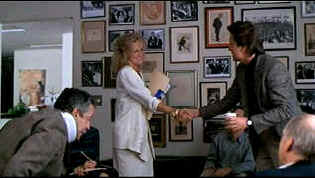

| Fatal Attraction (SE)/ B+, B |
| Paramount/1987/119/ANA 1.85 |
Fatal Attraction is the movie that made
it very clear to the viewing public that extra-marital affairs are like
walking barefoot on a hot path of sharp nails. Guaranteed the number of
New York farragoes dropped several percentage points during the initial
theatrical release. The message is clear: Don't do it! There just may be
an Alex shuffling side-to-side at a crowed bar.
Dan Gallagher lets temptation get in the way of what is
depicted as a terrific life. Happily married to attractive Beth, a
charming young daughter Ellen, a partner in a strong New York law firm,
Dan could be a poster boy for family man of the year. The lesion starts
out as nothing more than a few casual words with book editor Alex Forrest
at a publishing party. With Beth away for the weekend, Dan meets Alex
Forrest again at meeting concerning the book publisher she works for. It's
all too easy to fall off the cliff at the edge of happiness.
What begins as nothing more than a casual weekend tryst
turns bizarrely dangerous when Alex feels like hanging onto Dan. Fatal
Attraction revs into high gear from there.
Domestic bliss is set up with effective script
strokes. The family is comfortable with each other, they depend upon
each other, they are truly a family. The better the home life seems,
the more powerful the unsettling elements of the film. Relationships ring
true in almost every instance.
 |
|
A glance, a few words, a
handshake: watch out. ©Paramount
|
Adrian Lyne is outstanding at the helm of
Fatal Attraction. He delivers the heated sexual scenes with relish. Actors
exercise their libido with reckless abandon in his films. Visually, Lyne
sets a distinct, hot tone. He does some very clever things using lights
that are part of the scenery to create some powerful effects. Often
remembered for the counter-top love-making scene, Fatal Attraction does
develop sexual steam, but the thriller instincts are what carry the film,
and they are mostly on target.
Music is used very effectively. It's seldom
over-the-top out there and even when used with quiet restraint it adds a
level of tension. The Madame Butterfly excerpts are beautifully
integrated into the flesh of the film.
The screenplay by James Dearden and Nicholas
Meyer is well crafted. Details help make the film come to life. I never
realized how smutty taking the family dog on an illicit outing could
appear. Some of Dan Gallagher's reactions to his situation were difficult
to reconcile. doubt. He's an intelligent man, he's a sharp attorney; he
goes beyond his own logical limits and then fails to act with a
consistency of nature.
Michael Douglas, the perennial everyman, is an
excellent choice as Dan Gallagher. He's innocent enough and carries a fair
measure of sympathetic baggage to the table. Douglas uses his face very
well. His reactions are mostly on target. He plays the initial telephone
call to his wife after his errant night with terrific facial tension. It's
between the lines, not obvious and works very well. Glenn Close, cast
against type in Fatal Attraction, is more than up to the task of creating
an odious leech. Once she grabs onto you she doesn't want to let go. Close
turns up the smile big time. She's a man-eater all right. Anne Archer is
at her charming best as Beth Gallagher. Her solid homemaker streak
provides an excellent contrast to the honed manipulative smile Close uses
so effectively as Alex.
Lyne seems to like a grainy feel to his material and
the Paramount transfer handles in a consistently exemplary manner. It's
tightly controlled, delivers Lyne's ambiance without detracting from the
clarity. Just a hint of edginess creeps in here and there. It's a bright
DVD. Excellent detail. Shadow detail is fine, but I think black level
could have been a little deeper, especially in the darker scenes. Skin
tone range is slightly pinched. The transfer appears slightly washed out,
likely owing to Lyne's desired style of lighting. Even the outdoor
sequences are missing some snap. There are some specs of dirt and minor
blemishes on the source material. In a few scenes my current DLP set-up
was not very happy handling the grain in the image. When grain is combined
with a pan, DLP struggles. In a few compositions black details tend
to blend into one another slightly. The transfer is probably less than
optimally sharp and noise level is somewhat pronounced. It's certainly
serviceable, but it's not handsome.
A welcome special edition, Paramount's release features
audio commentary from director Adrian Lyne. While close to fifteen years
since Lyne made the film, his memories are sharp and insightful. He's
generous with his thought process. A simple detail like the neck brace
worn by one character is a fine example of how character and relationships
come to life in a film. Rehearsal footage between Michael
Douglas and Glenn Close is a special treat to see so well preserved. In
addition, the alternate ending is outstanding. In fact, it makes one
wonder if Lyne shouldn't have stuck to it or at least something closer to
it. His melodramatic and histrionic choice as it it stands is less than
harmonious with the rest of the film.
|
|
|
|

Selections from the Feature
Archive include articles on Akira Kurosawa, Frank Darabont, Blonde Bimbos, Hollywood Street Gangs, or Vietnam: The Hollywood Pariah, and many
more....
Film noir: The phrase hangs awkwardly on the tongue,
shadowy images peek out from behind half-closed doors. Click on the Noir and Noir Again symbol for a look into the
dark spaces of Hollywood's revisiting of film noir.

The Movie Poster
Archive includes extensive poster images from the films of stars like
Susan Hayward, Kirk Douglas, Katharine Hepburn and many more. Our
featured star is Kirk Douglas.

Hunted, The/B+,A-
An American businessman in Nagoya, Japan meets a beautiful Japanese woman
in a bar and the Kodo drums begin a pulsing beat that doesn't end until
the climatic sword battle. Lots of fun.

Agoraquest is offering reviews, forums, news, and more
dedicated to Sony products including, televisions, cameras, audio, DVD,
and more.
DVD Price Search
Allows you to create a "Comparison Cart" filled with
the DVD titles that you are interested in buying.
Jim Doolittle
ISF Instructor. Premier calibrator and expert front projection system
setup technician in the Boston area.
 It rains a lot in Portland, so DVDcorner.net
provides an umbrella of entertainment with lots of DVD reviews and DVD
news. Check out the monthly give-a-ways too!. It rains a lot in Portland, so DVDcorner.net
provides an umbrella of entertainment with lots of DVD reviews and DVD
news. Check out the monthly give-a-ways too!.
Classic Images on classic films, featuring news, reviews,
obituaries, film convention reports, and detailed articles on film people,
from the most famous to the most obscure
 ETEKNet is the web's only
24-hour, totally FREE source for all your home theater, DVD, Dreamcast,
PC, and Networking tech support needs! ETEKNet is the web's only
24-hour, totally FREE source for all your home theater, DVD, Dreamcast,
PC, and Networking tech support needs!
Buddhacon
features a wide range of reviews from DVDs, first-run movies to
top-selling albums. Editorials, features and more. User comments appended.
|